Sommaire
Thématique
"Favoriser la connaissance et la préservation de la biodiversité locale."
Contexte
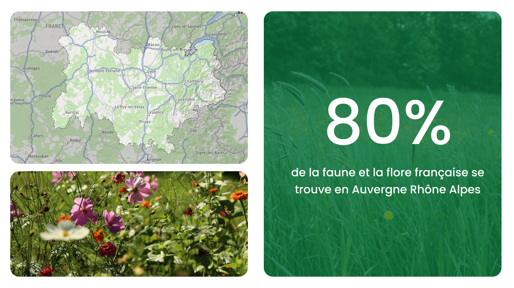
Quand ?
Le projet est conçu pour être utilisé tout au long de
l'année,
lors des sorties en extérieur, promenades,
randonnées ou déplacements quotidiens.
Où ?
L'application est destinée à être utilisée dans les
espaces
naturels et urbains d'une ville : parcs, jardins
publics, forêts, zones humides,
berges, espaces verts,
quartiers résidentiels ou encore établissements scolaires.
Qui ?
Le projet s'adresse à : Les habitants souhaitant découvrir la nature qui les entoure. Les étudiants et élèves dans le cadre d'activités pédagogiques, les associations environnementales.
Pourquoi ?
La biodiversité locale est souvent méconnue malgré son importance pour l'équilibre des écosystèmes. De nombreuses informations existent mais restent dispersées et peu accessibles au grand public.
Persona
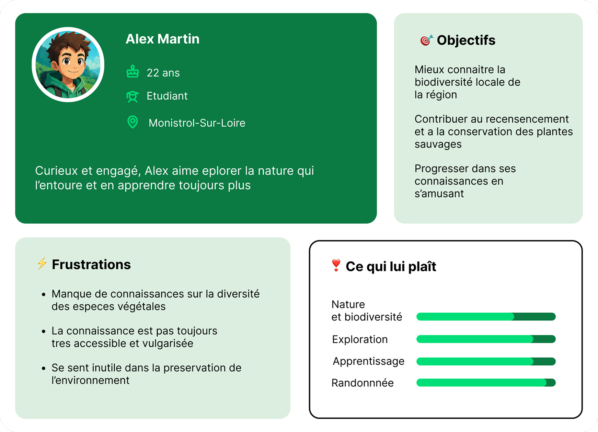
Problématique
Comment Alex peut-il participer à la collecte, à la transmission et à la diffusion de connaissances sur la biodiversité de sa ville ?
Benchmark
PlantNet : Identification des plantes à partir de photos. Principalement centré sur les plantes, peu d'aspect ludique et de gamification.
iNaturalist : Recensement de la biodiversité et partage d'observations. Plus orienté science participative, interface moins accessible au grand public.
Seek : Identification d'espèces et système de badges. Moins focalisé sur la biodiversité d'une ville spécifique et la communauté locale.
Userflow
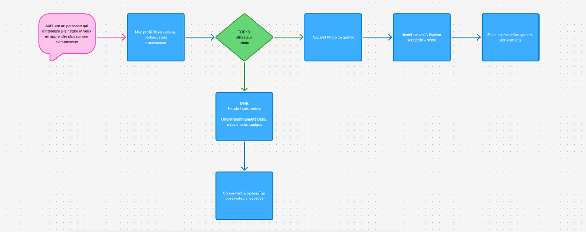
Solution
Une application qui permet de reconnaitre plus de 10 000 espèces de plantes , elle indique les bons gestes à faire pour contribuer à l’environnement à partir de celle-ci .
Une partie classeur pour réportorier les plantes par espèces
et indiquer leurs
spécifications exactes.
Tout ça avec un système de défis qui classe les plantes et leur attribue de l’xp en fonction de la difficultée de celle-ci, en bonus un système de classement local entre joueurs de la meme ville.
Les évolutions de Plantopia
Wireframes
Accueil
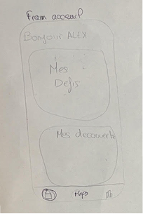
Défis
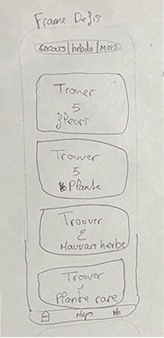
Maps
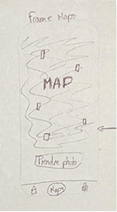
Floredex
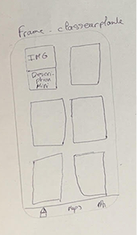
Description
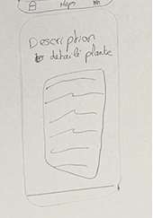
Classement
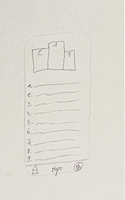
Middle Fidelity
Accueil
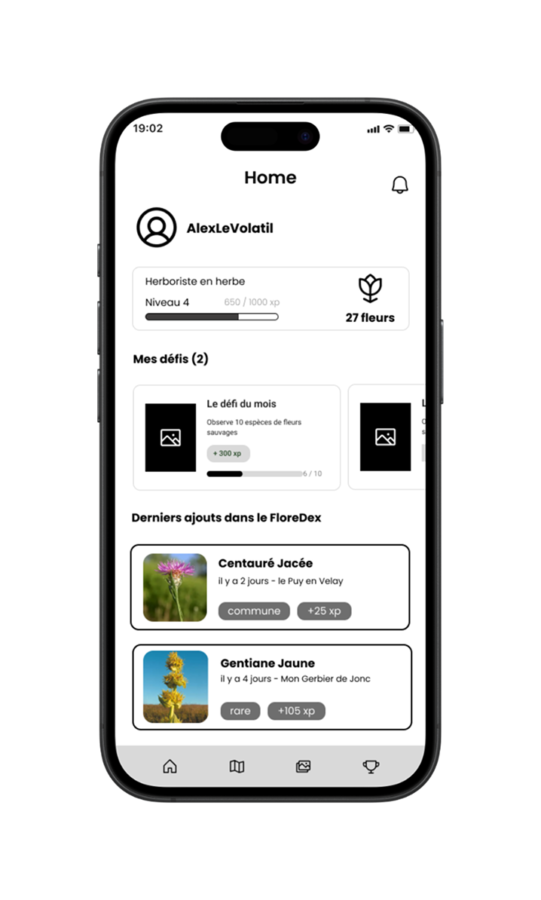
Défis
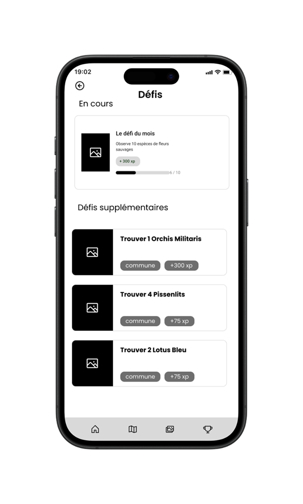
Map
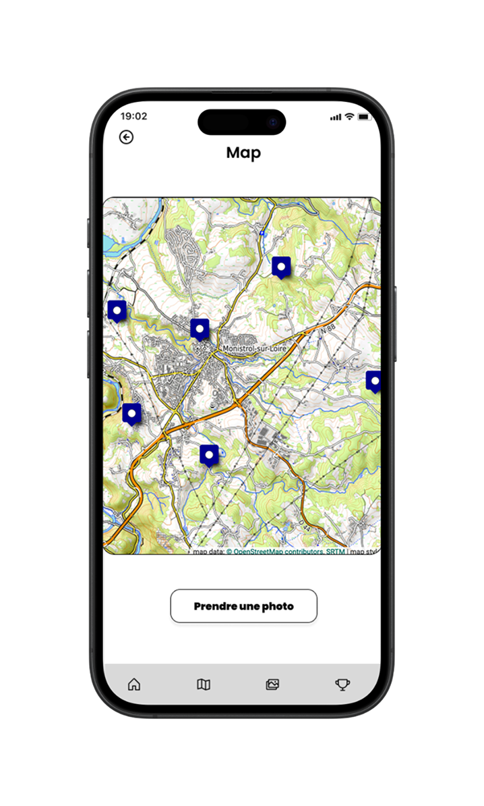
Floredex
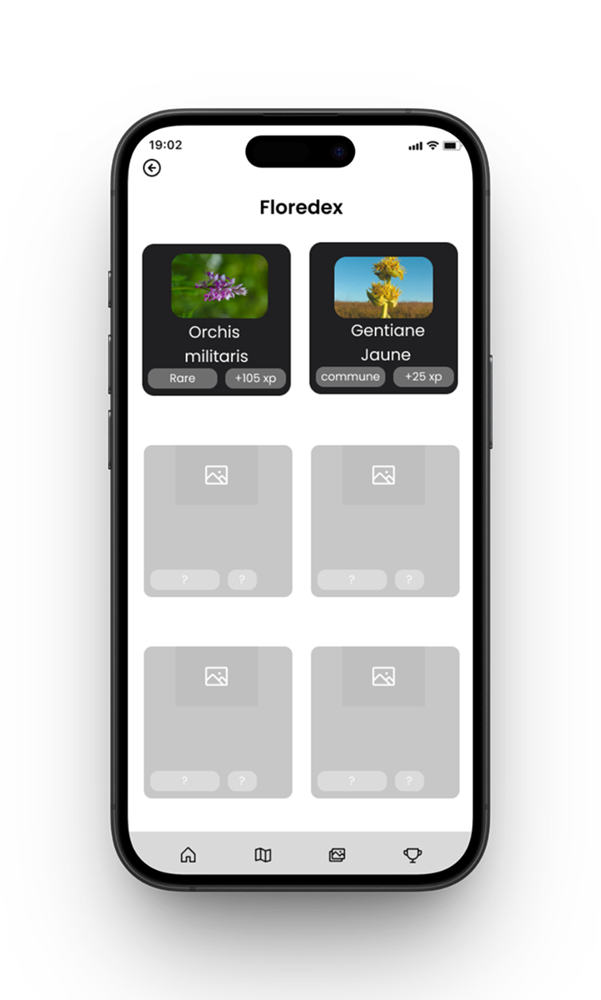
Classement
High fidelity
Accueil

Défis

Map

Pop-up

Description

Floredex

Classement

Tests utilisateurs
Avant
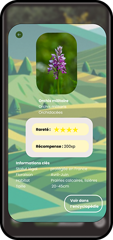
Après
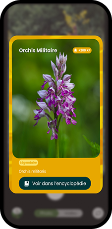
Premièrement nous avons changé les couleurs de la pop-up pour qu’elle soit
associée à une rareté spécifique.
Et pour finir Nous avons corrigé les icones et changer les
emplacements de textes de
façon à ce que cela soit le plus clair possible.
Avant
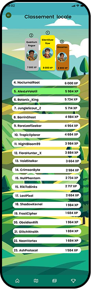
Après
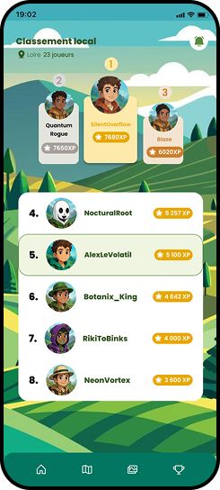
Nous avons enlevé Une grosse partie du classement et augmenté la taille des
cases pour plus de lisibilitée.
Avant
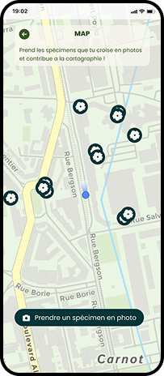
Après
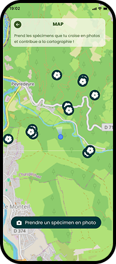
Nous avons modifié la page (rajouter de la verdure) à la map car elle
n’était pas cohérente avec notre persona.
Perspectives d'évolution
Notre prototype évolue en permanence grâce au retours des utilisateurs. Les prochaines itérations viseront à renforcer l’ergonomie, fluidifier l’expérience utilisateur, et intégrer des fonctionnalités collaboratives pour maximiser l’engagement. Rien n’est figé, chaque retour est une opportunité d’amélioration concrète !
Team
Margaux
Développeuse Front-End
Nils
UI/UX designer
Romain
Développeur Front-End
Raphaël
UI/UX designer